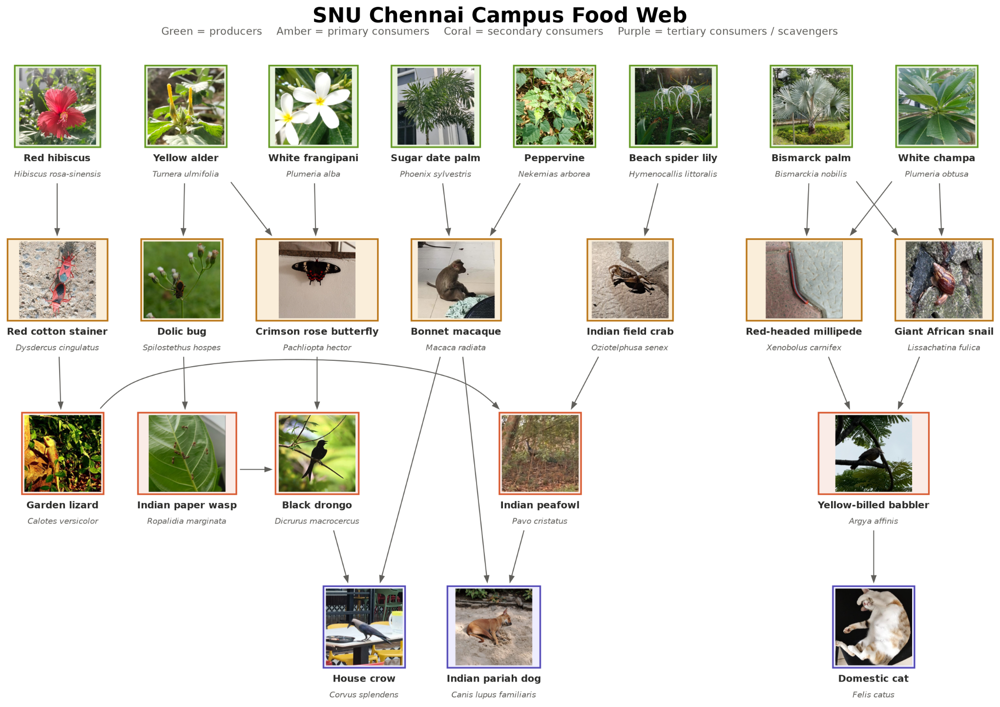

A systematically organized, research-grade collective catalog documenting 26 unique species across flora and fauna at Shiv Nadar University Chennai.
Comprehensive energy transfer diagram and multi-tier trophic structure encompassing the 26 unique species observed on the Shiv Nadar University Chennai campus.

Geographical hotspots identified during the campus biodiversity survey at Shiv Nadar University Chennai.
High-Diversity Ecotone (12 Species Documented)
Combines flowering shrubs, drainage margins, and leaf mulch supporting *Plumeria obtusa*, *Hibiscus*, *Peppervine*, *Spider Lily*, *Field Crab*, *African Snail*, *Peafowl*, and *Garden Lizard*.
Arboreal & Canopy Zone (5 Species)
Houses *Sugar Date Palm*, *Bamboo Palm*, *Red Frangipani*, *Indian Paper Wasp*, and *Indian Pariah Dog*.
Lepidoptera Microhabitat
Flowering microclimate supporting the Schedule I protected *Crimson Rose Butterfly (Pachliopta hector)*.
Mammalian & Canopy Foraging
Canopy trees and building ledges frequented by *Bonnet Macaque (Macaca radiata)* and *Domestic Cat (Felis catus)*.
Aerial Hawking Vantage
High open perches utilized by *Black Drongo (Dicrurus macrocercus)* for hunting airborne insects.
Architectural Landscape
Features the massive architectural *Bismarck Palm (Bismarckia nobilis)* providing shelter for urban birds.